ประจำเดือน กรกฎาคม
บริษัท พัฒนาสิน ไทยเทรดดิ้ง จำกัด
ผู้เสนอ: น.ส. น้ำทิพย์ ทุมสิทธิ์ (หัวหน้าสาขาหนองคาย)
8-Jul-69
เนื่องจากตอนนี้เราได้ใช้กระดาษ A4 ที่แกะใหม่ นำมาใช้ปริ้นเอกสารบิลขาย POS สำหรับการจัดของหน้าร้านให้ลูกค้า เพื่อให้ลูกค้าหน้าร้านตรวจเช็คสินค้า และใช้เป็นใบรับสินค้าเมื่อปริ้นบิลรับสินค้าเสร็จ ซึ่งเห็นว่าการใช้กระดาษและหมึกพิมพ์นั้น สิ้นเปลืองในระดับหนึ่งค่ะ
นำกระดาษที่ปริ้นบิลเช็คสินค้าแล้วผิด หรือในส่วนบิลที่ลูกค้าทิ้ง นำกลับมาใช้หน้ากระดาษที่เหลืออีก 1 ด้าน เพื่อปริ้นเอกสารเช็คของ POS หน้าร้านต่อไป
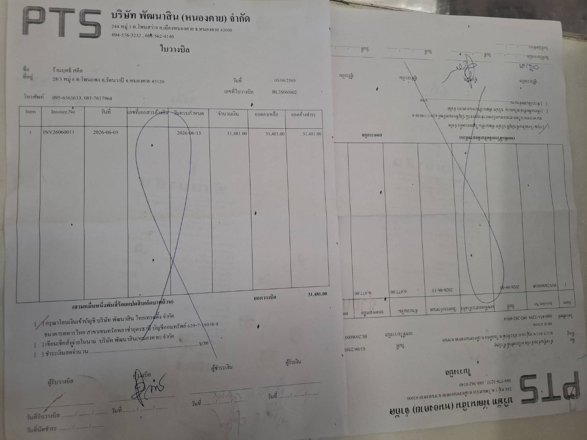
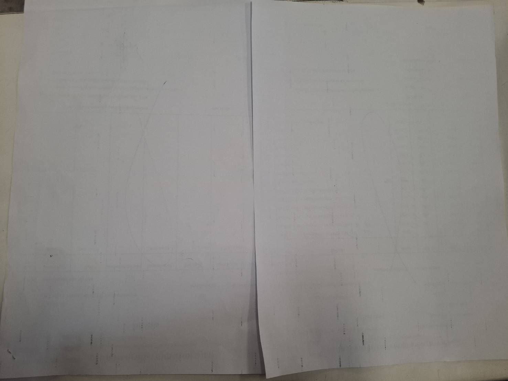
ช่วยลดต้นทุนค่ากระดาษ A4 ของสาขาและช่วยรักษาสิ่งแวดล้อม (ลดต้นทุน, สิ่งแวดล้อม)
ผู้เสนอ: ณัฐวริยา คงกล้า (หัวหน้าแผนกขาย)
9-Jul-69
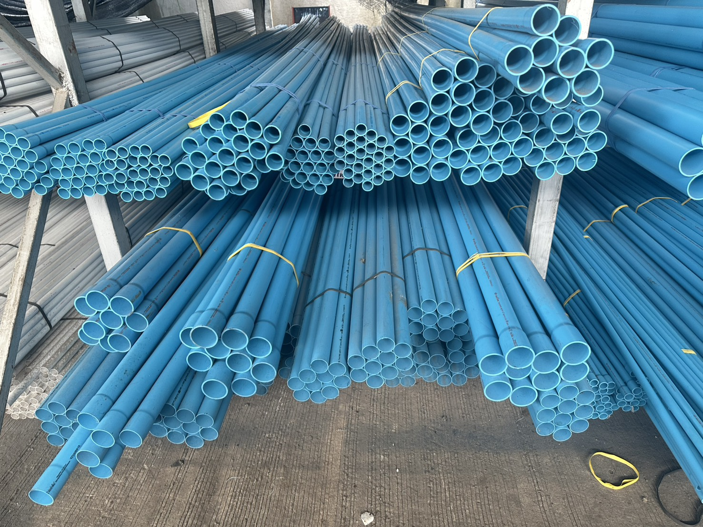
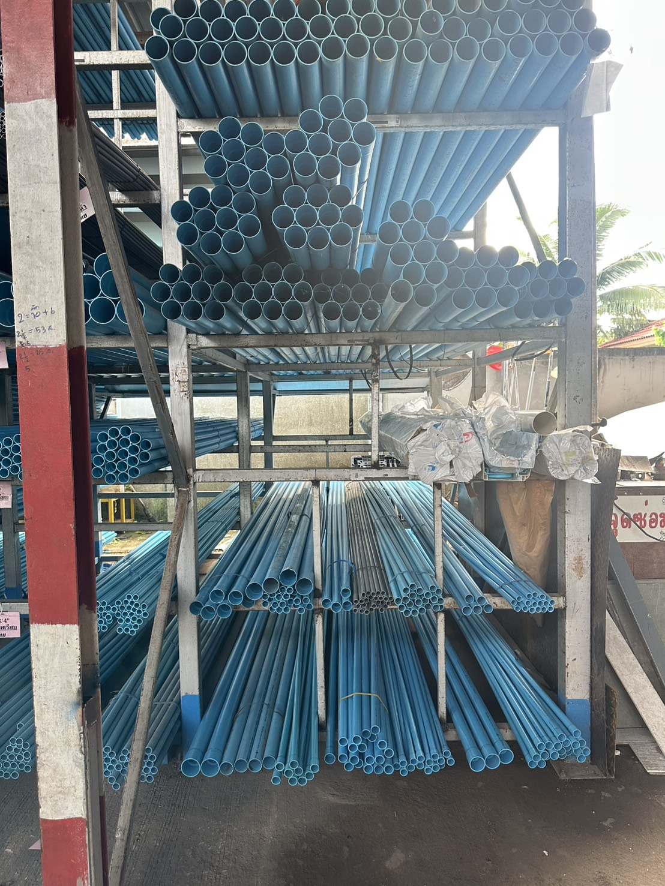
เพื่อจัดระเบียบชั้นวางท่อพีวีซี ท่อน้ำไทย ให้ง่ายต่อการจัดของ, ลดเวลาในการนับสต็อค และแยกท่อที่ปะปนกันตามขนาด (คุณภาพ, ลดเวลางาน, สิ่งแวดล้อม)
ผู้เสนอ: นาย วิชัย ทองเหล็ก, นาย สุรชัย สมสนุก, นาย นาวี มอโท (พนักงานจัดส่ง)
20-Jul-69
การจัดเรียงไม้ฝากระจัดกระจาย ไม่อยู่รวมกับกลุ่มหรือเพื่อนของมัน และไม่มีการจัดเป็นหมวดหมู่ที่ชัดเจน
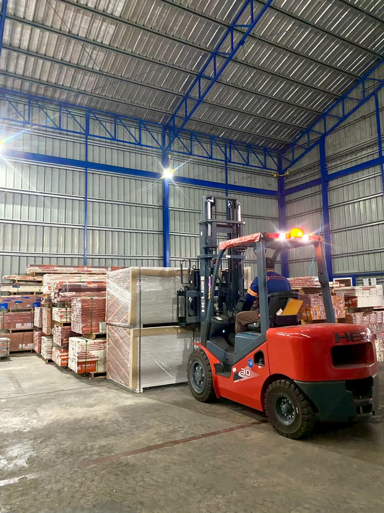
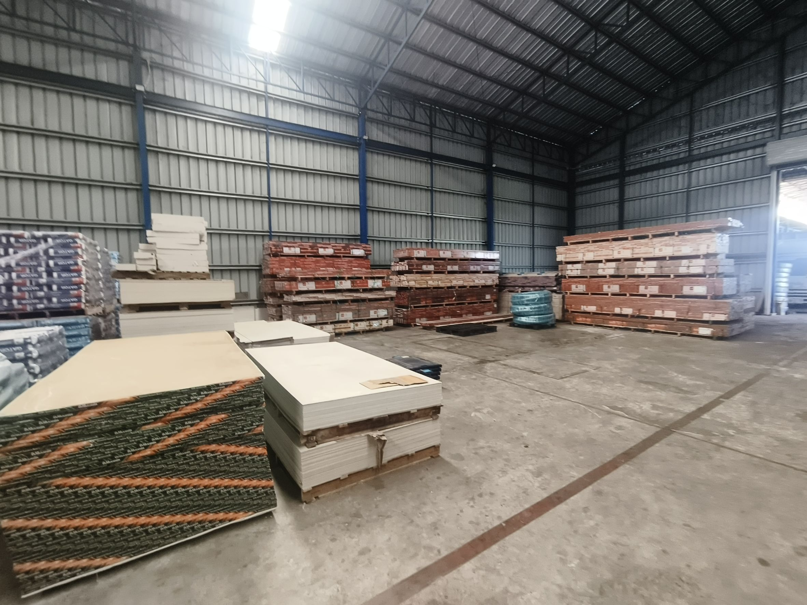
ประหยัดเวลาในการค้นหาและเบิกจ่ายไม้ฝา เพราะดูป้ายสีได้ง่ายขึ้น, มีพื้นที่ว่างเพิ่มขึ้น ลดความแออัด คลังสินค้ามีความเป็นระเบียบเรียบร้อย (ลดเวลางาน, สิ่งแวดล้อม)
ผู้เสนอ: นาย วิชัย ทองเหล็ก, นาย สุรชัย สมสนุก (พนักงานจัดส่ง)
23-Jul-69
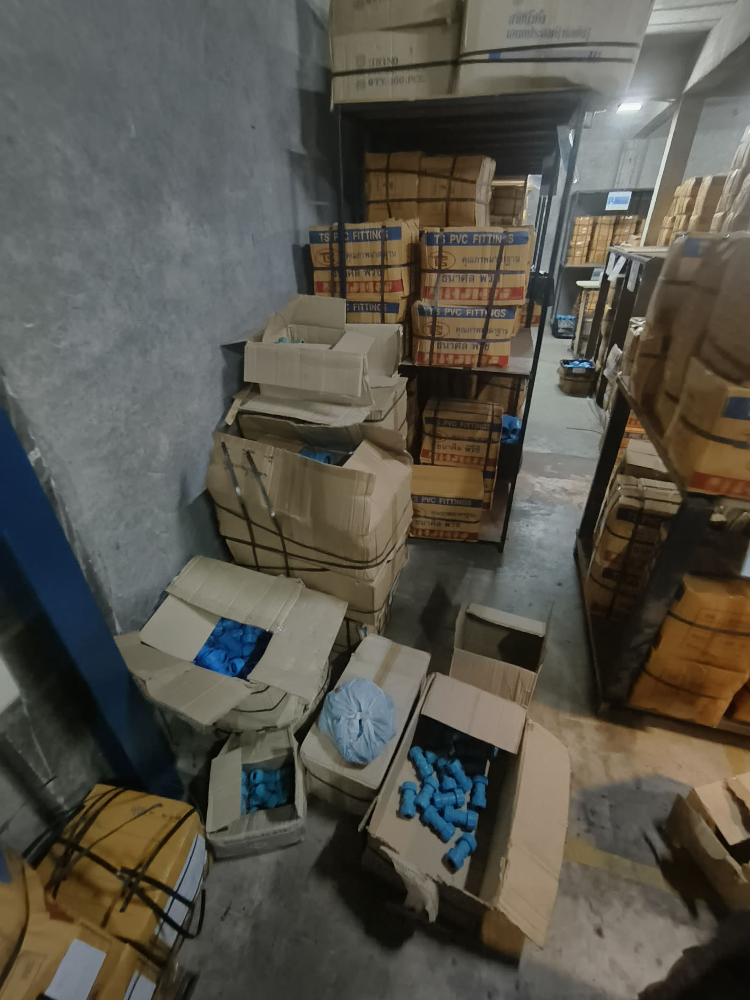
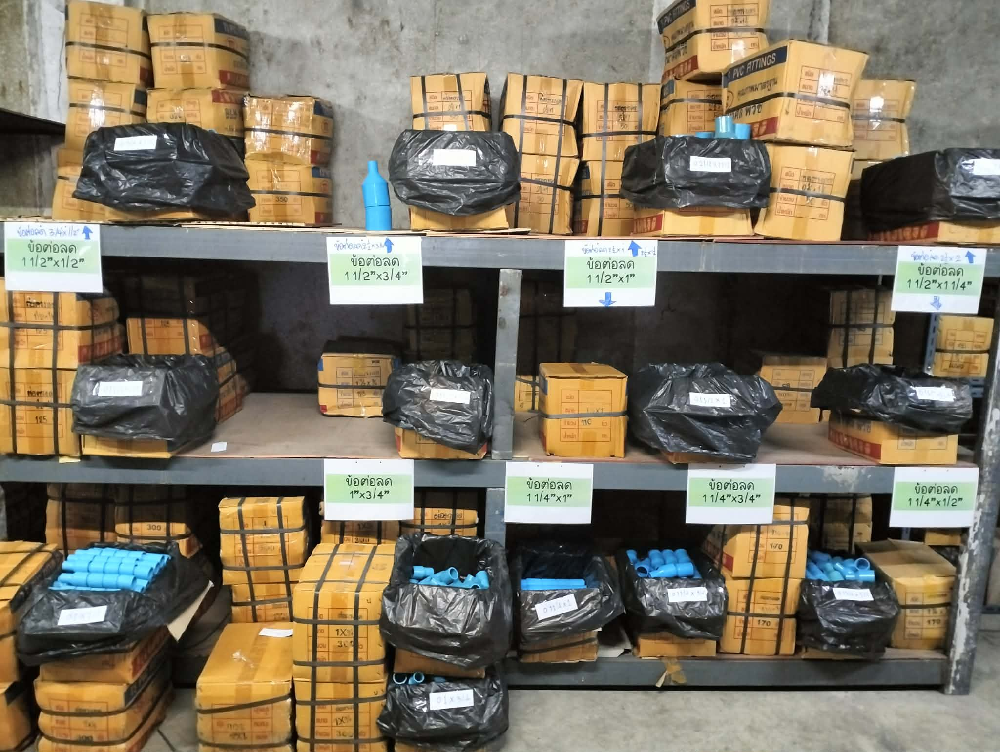
ประหยัดเวลาค้นหาและหยิบของ, หยิบสะดวกง่ายขึ้น ลังไม่ชำรุด (ลดเวลางาน)
ผู้เสนอ: วิชิตา สีแวงนอก (พนักงานจัดซื้อ)
28-Jul-69
ปัจจุบันการจัดเก็บดอกสว่านไม่เป็นหมวดหมู่ วางปะปนกัน โดยไม่มีป้ายชื่อหรือสัญลักษณ์บ่งชี้ตำแหน่ง ทำให้พนักงานใช้เวลาค่อนข้างนานในการค้นหา จัดออเดอร์ให้ลูกค้า หรือนำเข้าจัดเก็บ
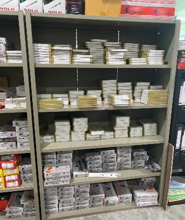
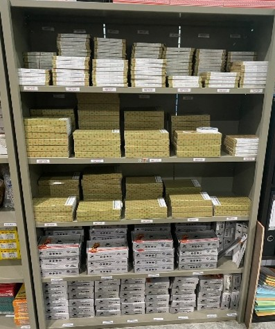
1. เพื่อลดเวลาในขั้นตอนการจัดเก็บและจัดออเดอร์ให้ลูกค้า
2. เพื่อให้การจัดเก็บดอกสว่านเป็นหมวดหมู่ มีระเบียบง่ายต่อการตรวจนับและควบคุมสต็อก (ลดเวลางาน)
ผู้เสนอ: น.ส. ภคพร สีแวงนอก (หัวหน้าแผนกบัญชี/การเงิน)
28-Jul-69
เนื่องจากการจัดเก็บแฟ้มเอกสารบิลซื้อเดิมวางตามความเคยชิน ไม่มีป้ายบอกช่วงตัวอักษรและไม่ได้เรียงตามลำดับตัวอักษร ทำให้ใช้เวลาในการค้นหาและจัดเก็บเอกสารนาน และมีโอกาสจัดเก็บผิดตำแหน่ง
ปรับปรุงโดยจัดเรียงแฟ้มใหม่ตามลำดับตัวอักษร ก-ฮ พร้อมกำหนดคำแหนงการจัดเก็บที่ชัดเจน เพื่อให้การค้นหาและจัดเก็บเอกสารได้รวดเร็ว ถูกต้อง และเป็นมาตรฐานเดียวกัน โดยมีขั้นตอนการปรับปรุงดังนี้
1. นำเอกสารออกมา จัดเรียงแฟ้มใหม่ทั้งหมด
2. เรียงแฟ้มตามตัวอักษร ก-ฮ
3. ติดป้ายกำกับช่วงตัวอักษร
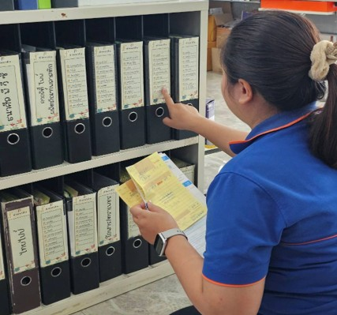
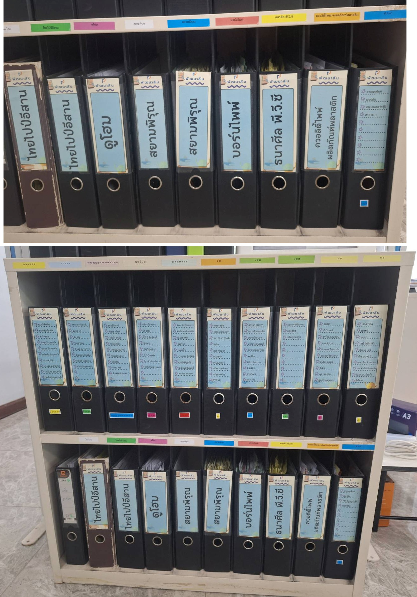
*ปกติใช้เวลาในการค้นหาและจัดเก็บเอกสาร 2-5 นาที หลังปรับปรุงใช้เวลาเพียง 30-60 วินาที*
หลังจากจัดเรียงแฟ้มตามลำดับตัวอักษร ก-ฮ พร้อมกำหนดตำแหน่งแฟ้มในการจัดเก็บ ส่งผลให้การค้นหาและจัดเก็บเอกสารได้รวดเร็วขึ้น ลดเวลาการทำงาน และเพิ่มความเป็นระเบียบของพื้นที่จัดเก็บ (ลดเวลางาน)